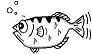

| АППАРАТНАЯ ЧАСТЬ TE-STM32F107 | |
Модуль TE-STM32F107 Барракуда с ядром Cortex-M3 и портом Ethernet производства Терраэлектроника |
|
микроконтроллер STM32F107VCT6 семейства ARM CORTEX-M3 |
|
Однокристальный 10/100Mb Fast Ethernet трансивер RTL8201CP |
|
СРЕДСТВА РАЗРАБОТКИ |
|
Интегрированная среда разработки Eclipse. Eclipse Foundation. |
|
Виртуальная Java машина. JRE |
|
исходный код ISP/BST внутрикристальный отладчик OpenOCD. Dominic Rath. |
|
Исходный код GNU GCC для сборки набора средств KGP. Компилятор С/С++/Fortran |
|
Исходный код GNU Binutils для сборки набора средств KGP. Инструменты работы с бинарными файлами, линкер. |
|
|  | Исходный код GNU GDB для сборки набора средств KGP. Отладчик. |
набор средств разработки Klen's GNU Package (KGP). Чернов Сергей aka Klen Santakheza. |
|
| ПРОГРАМНОЕ ОБЕСПЕЧЕНИЕ ДЕМОНСТРАЦИОННОГО
ПРИЛОЖЕНИЯ |
|
Исходный код демонстрационного приложения. Чернов Сергей aka Klen Santakheza. |
|
Newlib, реализация библиотеки стндарных функций языка С. |
|
TCP/IP стек для встраиваемых приложений uIP embedded TCP/IP. Adam Dukels. |
|
Библиотеки подерки переферии STM32 |
|
Портируемое ядро операционной системы ревльного времени FreeRTOS |
|